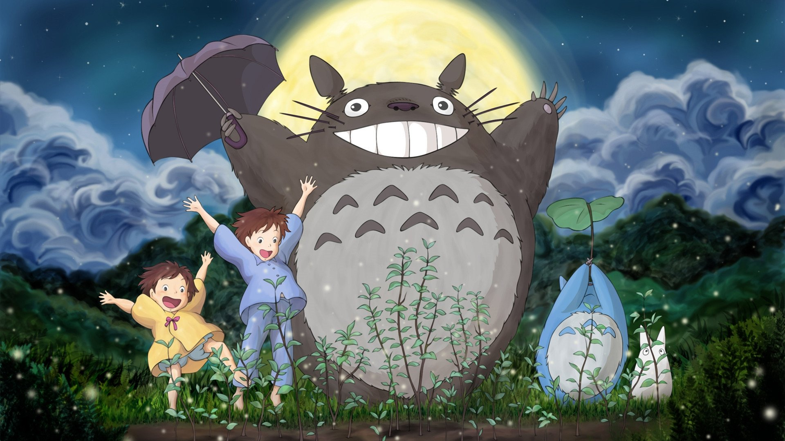

My Neighbor Totoroとなりのトトロ (Tonari no Totoro)Release Year1988DirectorHayao MiyazakiProducerHayao MiyazakiRunning Time86 minsRT Score⭐ 93%Two sisters move to the country with their father in order to be closer to their hospitalized mother, and discover the surrounding trees are inhabited by Totoros, magical spirits of the forest. When the youngest runs away from home, the older sister seeks help from the spirits to find her.Characters (10)SKSatsuki KusakabeGender: FemaleAge: 11Eye Color: Dark Brown/blackHair Color: Dark BrownSpecies: HumanMKMei KusakabeGender: FemaleAge: 4Eye Color: BrownHair Color: Light BrownSpecies: HumanTKTatsuo KusakabeGender: MaleAge: 37Eye Color: BrownHair Color: Dark BrownSpecies: HumanYKYasuko KusakabeGender: FemaleAge: AdultEye Color: BrownHair Color: Dark BrownSpecies: HumanTTotoroGender: NaEye Color: GreyHair Color: GreySpecies: TotoroCTChu TotoroGender: NaEye Color: BlackHair Color: BlueSpecies: TotoroCTChibi TotoroGender: NaEye Color: BlackHair Color: WhiteSpecies: TotoroCCatbusGender: MaleAge: NAEye Color: YellowHair Color: BrownSpecies: CatGGrannyGender: FemaleAge: ElderEye Color: BlackHair Color: GreySpecies: HumanKŌKanta ŌgakiGender: MaleAge: 11Eye Color: BrownHair Color: BrownSpecies: HumanAdditional InformationLocations (0)NoneSpecies (3)HumanCatTotoroVehicles (0)None